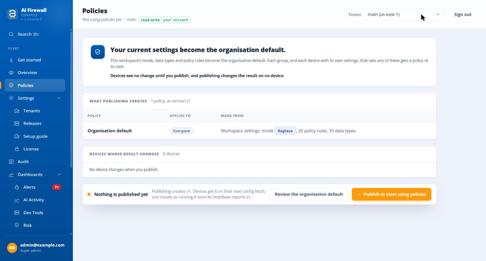
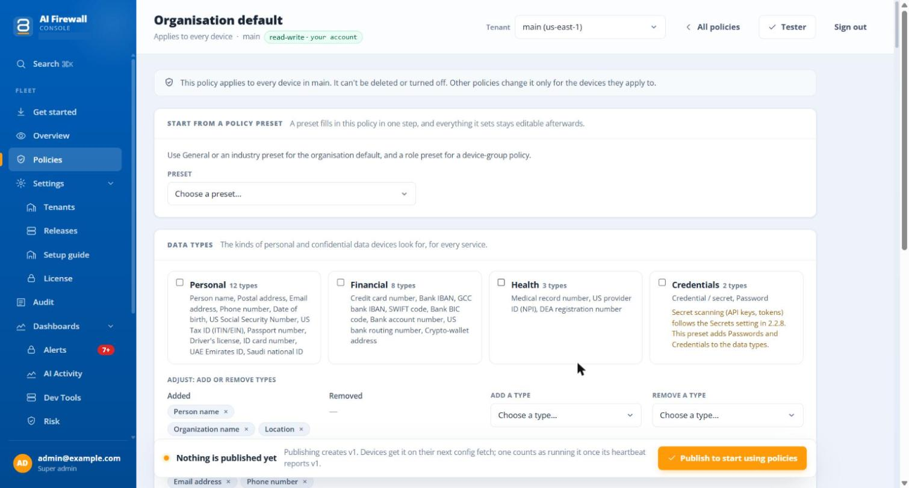
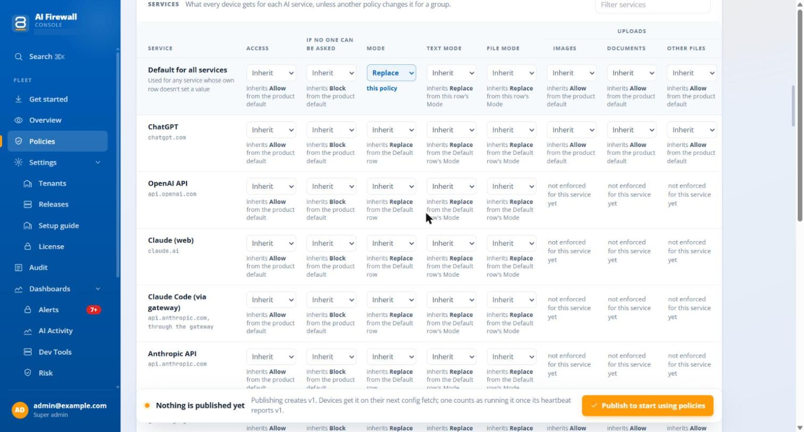
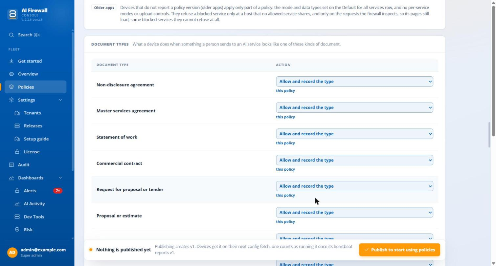
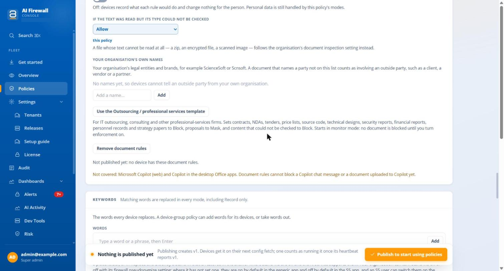
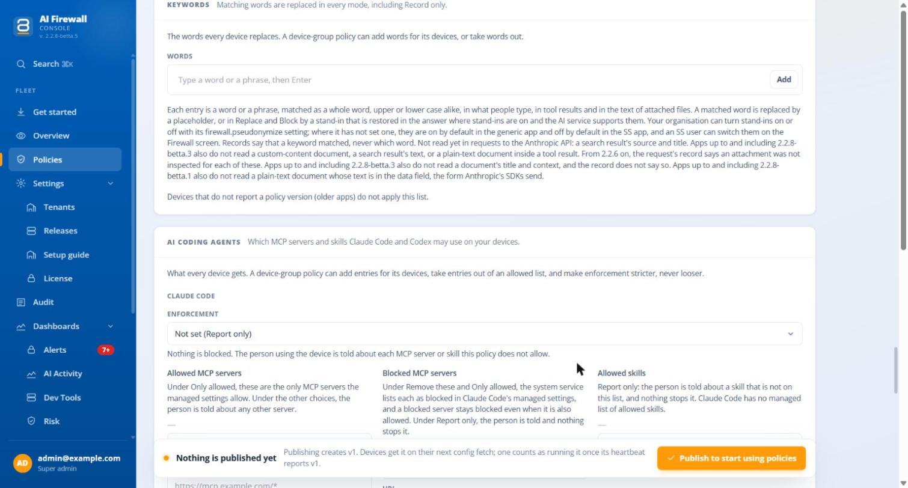
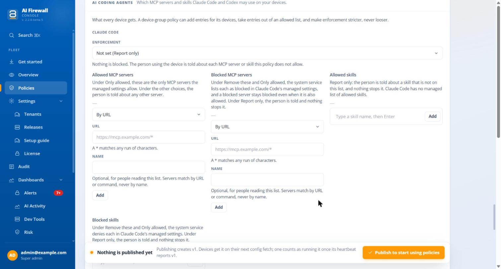
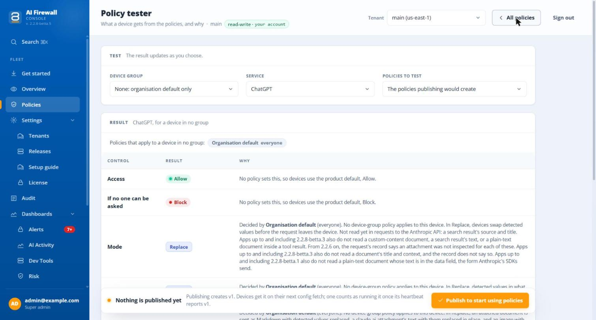

Policies¶
A policy tells the agents what to do for each AI service: whether it is allowed, what happens to personal data in text and in files, which uploads are allowed, what happens to each kind of document, which words are always replaced, and which MCP servers and skills the coding agents may use. You set one policy for the whole organisation and, if you need to, more for groups of computers.
Open Policies in the left menu.
Some words on the screens may still change before release
The wording of the Policies screens is not final. Check each name on your own server.
First use¶
A workspace that has never published a policy shows the screen Not using policies yet.

The picture shows a test workspace. Names, addresses and IDs are examples.
The page says: "Your current settings become the organisation default." Publishing takes the workspace's protection mode, its types of data and its advanced rules and makes them the Organisation default policy, version v1. A group or a computer that sets any of these on its own gets a policy of its own. The table What publishing creates lists each policy it will make, and Devices whose result changes lists the computers whose result would change, from what to what. Nothing is sent until you select Publish to start using policies.
Use Review the organisation default to look at the policy before you publish.
The list of policies¶
After the first publish, the page lists your policies. The organisation default is always first. It applies to every computer, is always on, and cannot be deleted. Under the name of each policy a line says what it is for: Device-group policy, Single-device policy, User policy or User-group policy.
| Column | What it shows |
|---|---|
| Policy | The name |
| Applies to | The groups of computers, or the people, the policy is for |
| Except | Groups or people left out |
| Enabled | Whether the policy is on |
| Running | How many computers run the current version, as "N of M" with a bar. It reads "Off · no effect" for a policy that is switched off |
A computer counts as running a version only when its status report says so. A computer on an older app that does not report a policy version is counted separately: "report no policy version (an older app, or no heartbeat yet)". See devices opens the Devices tab of the workspace.
Edit a policy¶
Select a policy to edit it.

A policy has these parts. Not every part is on every policy.
| Part | What it does |
|---|---|
| Name, Description, Enabled | Basic facts. The organisation default cannot be switched off |
| Applies to, Except | The device groups the policy is for. See Policies for people |
| Start from a policy preset | Fills in the policy in one step. See Presets |
| Data types | The kinds of personal and confidential data computers look for. See Data types |
| Services | A table with one row for each AI service. See The services table |
| Document types | What a computer does with each kind of document, such as an NDA or source code. See Document types |
| Keywords | Words that are always replaced. See Keywords |
| AI coding agents | Which MCP servers and skills Claude Code and Codex may use. See AI coding agents |
| Edit advanced rules | Opens the rules builder. On the organisation default only. See Policy rules |
Select Test this policy on a group policy, or Tester on the list, to try a policy without publishing it.
Data types¶
The card Data types offers four presets: Personal (12 types), Financial (8), Health (3) and Credentials (2). The lists Added and Removed, with Add a type and Remove a type, adjust the result.
- The Credentials preset adds passwords and credentials as data types. Scanning for secrets such as API keys and tokens follows the Secrets setting, not this card.
- A group policy shows the Data types card only once it sets data types, for example through a preset. It then offers Stop setting data types here.
- A group policy that sets data types replaces the organisation default's list. It does not add to it.
The services table¶
The table Services has one row for each AI service, and a first row, Default for all services, for any service whose own row sets nothing.

| Column | Values | What it controls |
|---|---|---|
| Access | Allow, Warn, Block | Whether computers may use the service at all. A blocked service shows a block page |
| If no one can be asked | Block, Allow | What a computer does where a Warn would need to ask the person. See below |
| Mode | Record only, Replace, Block | What happens to detected data. See Protection modes |
| Text mode | Inherit, Record only, Replace, Block | The mode for what people type and for tool results |
| File mode | Inherit, Record only, Replace, Block | The mode for attached documents and images, a text file sent as an upload, and a file's text sent inside a message |
| Uploads: Images, Documents, Other files | Allow, Warn, Block | Whether a kind of file may be uploaded |
A row that sets neither Text mode nor File mode uses its Mode for both. Inherit keeps the value from the row or policy below it, and the cell says where it comes from, for example "inherits Allow from the product default". Filter services searches all services, and Show N more services shows the rest.
Warn is offered for Access and for each upload control, not for Mode. No app shows the question to the person yet. A computer therefore does what If no one can be asked says: it blocks, unless you choose Allow. The cell under a Warn says so, for example "No app asks yet: blocked, as If no one can be asked says". Audit marks such a row "warned; no prompt shown".
Some services cannot be blocked
A service that shares an address with another service cannot be blocked at that address. The row says "Block not available".
Upload blocking is proven for four services only
A Block on Images, Documents or Other files is proven to stop the upload for ChatGPT, Gemini (web), Perplexity and Qwen. For other services the screen says "not enforced for this service yet", and a Block there may stop nothing. Test each service you depend on.
Document types¶
The card Document types sets what a computer does when something a person sends to an AI service looks like one of these kinds of document: a non-disclosure agreement, a master services agreement, a statement of work, a commercial contract, a request for proposal or tender, a proposal or estimate, a price list or rate card, source code, a technical design or specification, a security report, a financial report, and more. It is on the organisation default, on group policies and on policies for people, not on a policy for one computer.

For each kind of document you choose one Action:
| Action | What a computer does |
|---|---|
| Inherit | Takes the value from the organisation default (on a group policy) |
| Allow | Sends it |
| Allow and record the type | Sends it, and records the kind of document |
| Replace personal data | Replaces the personal data in it, as the modes do |
| Warn | Would ask the person. No app asks yet, so a computer treats a Warn as a Block |
| Block | Does not send it |
Below the table:

- Enforce document rules. Off by default. While it is off, computers only record what each rule would do and change nothing for the person. Personal data is still handled by the policy's modes.
- If the text was read but its type could not be checked. Allow or Block. A file whose text cannot be read at all, such as a zip, an encrypted file or a scanned image, follows the organisation's document inspection setting instead.
- Your organisation's own names. The legal entities and brands of your organisation, on the organisation default only. A document that names a party that is not on this list counts as involving an outside party, such as a client, a vendor or a partner. With no names, a computer cannot tell an outside party from your own organisation.
- Use the Outsourcing / professional services template. Sets contracts, NDAs, tenders, price lists, source code, technical designs, security reports, financial reports, personnel records and strategy papers to Block, proposals to Replace personal data, and content that could not be checked to Block. It starts with Enforce off, so nothing is blocked until you turn enforcement on. Remove document rules (on a group policy, Stop setting document rules here) takes the rules away.
- A line says how many computers apply the rules, for example "Not published yet: no device has these document rules", or "N of M devices". Only computers on an app that supports document rules apply them.
Limits of document rules
- Microsoft Copilot (web) and Copilot in the desktop Office apps are not covered. A document rule cannot block a Copilot chat message or a document uploaded to Copilot.
- Which kinds of document a computer recognises depends on its app version. The card lists the kinds that are "Not recognised yet". Test the rules with your own documents before you turn enforcement on.
Keywords¶
The card Keywords lists words and phrases that are replaced in every mode, including Record only.

- On the organisation default there is one list, Words. On a group policy there are two: Adds and Takes out.
- Type a word or phrase and press Enter, or select Add. A keyword has 2 to 100 characters and at least one letter or digit. Upper and lower case count as the same. A list holds at most 200 keywords.
- A keyword matches as a whole word, in what people type, in tool results and in the text of attached files. It is replaced by a placeholder. The records say that a keyword matched, never which word.
- The words of a group policy start from the organisation default's list. Every group's Adds join the list and every group's Takes out leave it. A removal by any group beats an add by another.
- A computer that does not report a policy version does not apply the list.
- Requests to the Anthropic API do not read a search result's source and title yet. The record says that the attachment was not inspected.
AI coding agents¶
The card AI coding agents sets which MCP servers and skills Claude Code and Codex may use on your computers. It is not offered on a policy for one computer or for people.

For each tool you set Enforcement:
| Enforcement | What happens |
|---|---|
| Report only (the default) | Nothing is blocked. The person is told about each MCP server or skill the policy does not allow |
| Remove these MCP servers | The app takes the blocked MCP servers out of the person's own settings and puts them back once they are no longer blocked. On Claude Code the system service also lists them as blocked in the managed settings, which the person cannot change. On Codex the person can turn them back on |
| Only allowed MCP servers can run | The system service writes the allowed list into the managed settings of the tool |
The lists are Allowed MCP servers, Blocked MCP servers, Allowed skills and Blocked skills. An MCP server is added By URL (https://mcp.example.com/*, where one * stands for any run of characters) or By command (one part per line, an exact match), with a Name. A skill is added by name. A list holds at most 256 entries.
Limits of this card
- It governs Claude Code and Codex only. Cursor, VS Code, Windsurf and Claude Desktop are listed in Dev Tools but not governed here.
- The managed settings are written only on computers where the product's system service is installed. Without it the app can only report, and remove servers from the person's own settings, which the person can undo.
- Codex has no managed block list. Allowed skills are "Not checked on Codex devices yet". Claude Code has no managed list of allowed skills.
- A blocked list is the union of all groups' lists. A group never lifts a block.
Presets¶
The card Start from a policy preset fills in a policy in one step. Everything it sets stays editable. Use General or an Industry preset for the organisation default, and a Role preset for a group policy. It is not offered on a policy for one computer or for people.
| Group | Presets |
|---|---|
| General | Monitor prompts, mask files |
| Industry | Banking, Healthcare, Legal, Public sector |
| Role | Business analysts, Sales, Accountants, Developers, Customer support, HR, Executives, Contractors |
A preset sets Text mode, File mode and data types, and it can also set blocked services, upload controls and keywords. For example Contractors sets both modes to Block, and Executives sets both to Replace.
Choose a preset to see What applying it changes in this policy, line by line. Select Apply preset. The screen then says that the preset is applied to this draft and that you must publish to send it to devices. Nothing is sent until you publish.
How the policies of a computer combine¶
For one computer and one AI service, the result comes from these layers, from the top:
- A policy for the person who is signed in on the computer, if one names them. See Policies for people.
- The policies of the groups the computer is directly in. For Access, Mode, Text mode, File mode and each upload control, the strictest value among the matching policies wins: Block beats Replace, which beats Record only, and Block beats Allow. Each of Text mode and File mode is worked out on its own.
- The organisation default.
- The product default: Allow, and Record only.
Within a policy, a row for the service beats that policy's Default for all services row.
Data types, document types, keywords, AI coding agents and advanced rules combine in their own ways, described above and in Policy rules. A group policy overrides the organisation default even when it is looser. Only groups the computer is in directly count. A computer in no group gets the organisation default.
Test, publish and roll out¶
The tester¶
Select Tester to see what a computer gets and why. It runs in your browser and makes no call to the server.

Choose a Device group ("None: organisation default only" for a computer in no group), a Service, and Policies to test, for example "The policies publishing would create" before the first publish. The table Result shows the rows Access, If no one can be asked, Mode, Text mode, File mode, Images, Documents and Other files, with a "Stricter wins" badge where two policies met, and a Keywords block. It says "Allowed: shared host, cannot be blocked" or "Allowed: block not enforced for this service yet" instead of a false Block. The tester leaves out policies for people.
Publish¶
A bar at the bottom shows "N unpublished changes". Publishing creates the next version. Computers get it at their next check. The server keeps one version of the set: there is no list of old versions and no restore. The admin log names the version and the policies in it.
If you open the policy list with an old copy, publishing is refused with "Refresh to load v<N>, then make your change again." Only an admin or super-admin can publish.
Roll out¶
The column Running and the rollout card count the computers by the version they report. A computer is counted only when it reports back the new version. Lifting a service block, or deleting a rule, reaches computers at their next check.
What a computer enforces¶
| Part | What a computer does |
|---|---|
| Access | The agent shows a block page for a blocked service |
| Mode, Text mode, File mode | Enforced when the computer reports a policy version |
| Keywords | Replaced in every mode |
| Uploads | Enforced where the computer can see the upload, and proven for four services |
| Document types | Applied by computers on an app that supports them. With Enforce document rules off they only record. A Warn is carried out as Block |
| AI coding agents | Report, notify and edit the person's own settings. Managed settings need the system service |
Record only is not completely hands-off
In Record only, the request is sent unchanged apart from machine secrets and the organisation's keywords, which are still replaced.
Block and a search question in a web address
A search question that an app sends in a web address, such as Google AI Mode or the Brave Search API, is replaced and sent. It is not refused, even in Block.
Computers that do not report a policy version get an approximation: the mode and data types of the Default for all services row. They use one mode for text and files and do not apply keywords. The list says per group which services such computers can still refuse.
Policies for people¶
A policy can name people and user groups in Applies to and Except. The list then reads, for example, "Applies to the people in Interns (4 people), and 2 people named one by one".
- The console cannot create or change people or user groups. A policy for people reaches the server only through the API (
/api/v2/admin/tenants/<workspace>/policieswith the people inappliesTo, and/user-groupsfor the groups). The console shows such a policy, with its name and how many computers can apply it. - A person is the operating-system sign-in name that the computer reports.
- A policy for people can set Access, Mode, Text mode, File mode, upload controls, document types and keywords. It cannot set data types, advanced rules or AI coding agents.
- A person's policy applies on any enrolled computer where they sign in, once that computer has reported them. Only computers whose app applies policies for people do this. The Running column says "X of Y devices apply policies for people". For each control, the stricter of the person's value and the computer's value wins. If only one sets it, that one wins, even if it is looser.
- The server keeps a list of the sign-in names that computers report. See What the workspace records.
Sign-in names
Policies for people use the names the computers report, and the server stores them whatever you set for who audit records name.